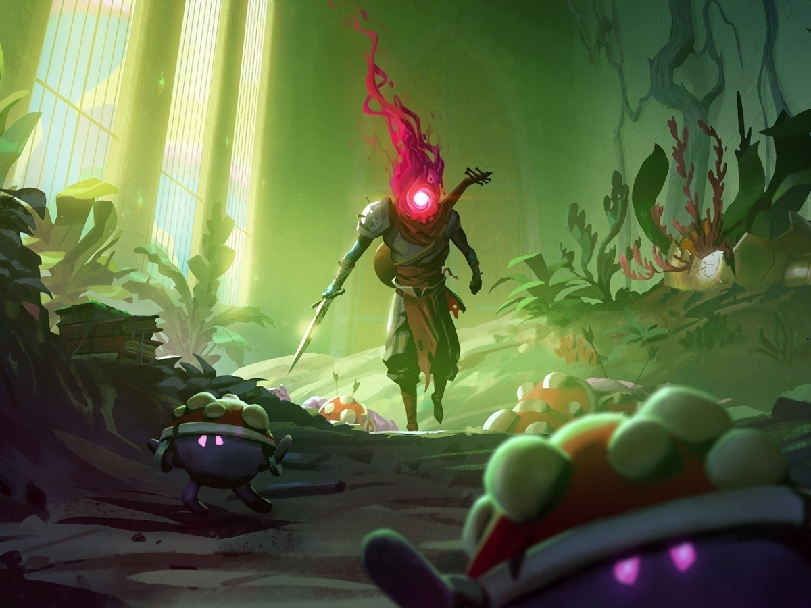
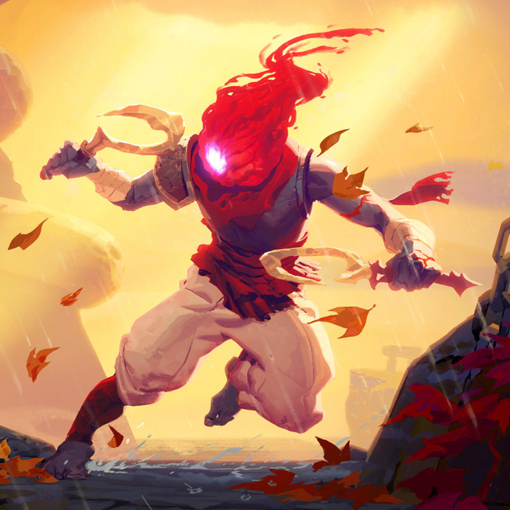
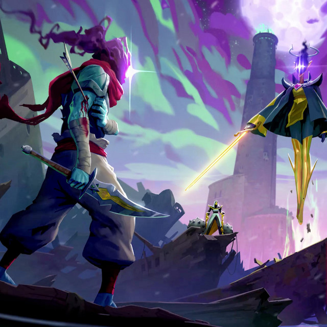

1. Return To Castelvania
Il precursore ritorna alle sue origini in 2D! Gli indimenticabili personaggi e l'atmosfera gotica di Castlevania si combinano con il combattimento frenetico del pluripremiato roguelite Dead Cells in questa collaborazione senza precedenti.
È apparso improvvisamente un portale per un suggestivo castello e un guerriero imponente di nome Richter ti chiede di aiutarlo a distruggere il male assoluto che si cela all'interno.
Accettando più per la promessa di nuovi bottini che per dovere morale, ti fai strada tra le stanze e i corridoi del gotico castello per trovare e uccidere questo misterioso Dracula...
Sconfiggi orde di scagnozzi sovrannaturali in quello che finora è il nostro contenuto aggiuntivo più grande, che include due livelli, tre boss e una nuova storia!
2. The Bad Seed

Esplora un rilassante arboreto, aggirati in una palude tossica e affronta un nuovo boss in questi contenuti di gioco progettati per espandere l'universo di Dead Cells
Potrete giocare attraverso:
⋅ L'Arboreto fatiscente: una serra rilassante e tranquilla abitata da un pacifico clan di funghi, con il comprensibile desiderio di uccidere i Decapitati.
⋅ il Morass dei banditi Un ambiente nocivo governato da una banda di mutanti che abitano sugli alberi con bastoni appuntiti, da subdoli uomini rana che sparano dardi e da Un gruppo di letali succhiasangue.
⋅ il Nido: Dominio di Mamma Tick, se avete visto Starship Troopers, avete capito...
3. Fatal Falls

Affronta un boss e due nuovi livelli evitando nuove trappole e nemici.
Cerca di non cadere mentre ti fai strada fra gli strapiombi sulla costa dell'isola. Esplora santuari sospesi in aria, intrufolati nel covo di una società segreta fuorilegge e scopri i segreti di un nuovo boss.
⋅ I Santuari in rovina Anche se il panorama mozzafiato potrebbe essere una distrazione, fai attenzione ai corvi mentre saltelli tra una piattaforma e l'altra, schivando serpenti armati di lance, costeggiando nuove e sadiche trappole nella speranza di superare un precipizio apparentemente senza fondo.
⋅ Le Coste Imperiture I tuoi progetti per le vacanze sono stati rovinati da dei nemici che, a quanto pare, non vogliono proprio saperne di morire; questo può essere un problema, soprattutto quando cerchi di superare una scogliera scivolosa.
⋅ Il Mausoleo Un nuovo boss umanoide con una storia da raccontare, uno stile di combattimento di difficile lettura e un'ambientazione magnifica per un duello.
4. The Queen and the Sea

Fatti strada attraverso relitti affondati, scala un faro in fiamme e affronta il tuo avversario più letale finora. Se riesci a sopravvivere a tutto questo, forse riuscirai finalmente a lasciare quest'isola dimenticata da Dio...
⋅ Relitto infestato Striscia lungo i claustrofobici corridoi di un relitto in rovina, mentre dei sinistri abomini nascosti nell'ombra ti danno la caccia.
⋅ Faro Respingi gli incessanti agguati dei servitori, salvati dalle fiamme voraci che salgono senza sosta e raggiungi la cima di questa torre imponente.
⋅ La Corona Accendi il faro in cima alla torre e prova a scappare da quest'isola maledetta. Non prima, però, di saldare un conto in sospeso con il tuo passato...
Acquista il gioco e i suoi DLC sulle piattaforme
-
PlayStation
PlayStation
-
Steam
Steam
-
Xbox
Xbox
-
Xbox
Google Play Store